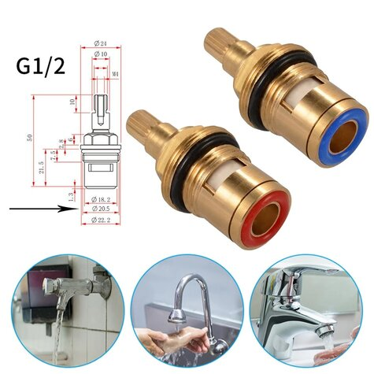
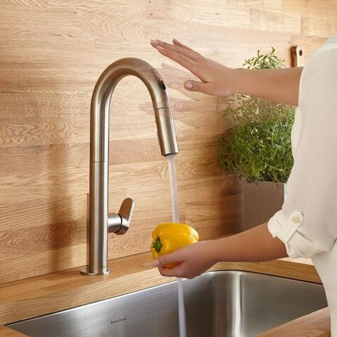

Faucet
Overview
Cartridge Removal
Anyone can repair a faucet. There are Just a couple of must do's to make the repair go much easier. Before getting started know what brand faucet you have. If you don't know then take lots of pictures to use as identifiers when shopping for repair parts. 1-Make sure the water to the faucet is turned off. 2-take off the handle, the cartridge to be repaired or changed is positioned under it.There are two ways to remove the handle. The first is by loosening the alan screw positioned, either in the front side or rear side of the handle. if you don't have a hole on the side then you have a top mount screw style. to remove this type of handle, you will need to pry off the index button (hot/cold) on top of the handle and expose the screw. Simply remove the screw and wiggle the handle to remove it. 3-There are a couple types of retainers used to secure the cartridge, knowing what brand faucet you have will be most benefitial for this step. The most common retainer will be a brass nut, or cap, which will need to be loosened using an adjustable wrench or pliers. Once the nut is removed the cartridge pulls out. The other is a pin style. Once the handle is removed exposing the top of the cartridge look for a copper or stainless steel u-style pin.Once located, simple pull the pin, using a pair of pliers. Once removed grip the cartridge with the pliers and while using a wiggling motion pull until it come out. Take the cartridge with you to purchase a replacement. There are some that look similar BUT will not interchange.
Where to shop
Now that you have your Faucet cartridge out its time to go shopping. If you know where the faucet was purchased then return there to get the right replacement parts. In the instance that you do not know where it was purchased or cannot find a brand name anywhere then you will need to find somewhere for parts. This can be challenging. Usually, a quick google will point you in the right direction. If the only place to shop is at the big box stores, keep this in mind- not all faucets are created equal! Just because a part might look similar doesn't mean it will work. If the salesperson tells you that it's "really close", be very skeptical and find out what their return policy is. The chance that the caartridge will not fit is extremely high.
Replacing Cartridge
Once the proper cartridge has been purchased and ready to install it's always a good idea to grease all the gaskets and o-rings with a food grade silicone grease before re-installing. This will ensure that they will stay pliable and not dry out which in turns keeps your faucets in optimum working condition. Then simply reverse the steps used to remove the cartridge. A good tip to remember is that a faucet needs to be exercised. If you have a faucet that gets seldom use turn it on weekly for just a few seconds. This helps keep everything working smoothly, as well as protecting your faucet from freeze-ups. Adding a faucet maintenance "to do list" to your yearly or bi-yearly calendar is a good safeguard against stress and frustration that seems to be associated with plumbing problems. As the old saying goes "an ounce of prevention is worth a pound of cure."